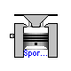
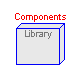
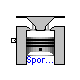
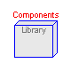

This package contains numerous engine component models and a complete I4 engine model.
SimpleCar.Engine.GeometrySource

This model takes basic engine geometry parameters and computes the complete set of engine geometry characteristics.
| Name | Default | Description |
|---|---|---|
| bore | Engine bore [m] | |
| stroke | Engine stroke [m] | |
| conrod | Connecting rod length [m] | |
| comp_ratio | 9.5 | Compression ratio |
model GeometrySource "Engine geometry specification" parameter Modelica.SIunits.Length bore "Engine bore"; parameter Modelica.SIunits.Length stroke "Engine stroke"; parameter Modelica.SIunits.Length conrod "Connecting rod length"; parameter Real comp_ratio=9.5 "Compression ratio"; Interfaces.EngineGeometryProvided geom; equation assert(bore > 0, "Invalid bore value"); assert(stroke > 0, "Invalid stroke value"); assert(conrod > 0, "Invalid connecting rod length"); assert(comp_ratio > 1, "Invalid compression ratio"); geom.bore = bore; geom.stroke = stroke; geom.conrod = conrod; geom.Vc = geom.Vd/(comp_ratio - 1); geom.Ap = Modelica.Constants.PI*(bore/2)^2; geom.Vd = stroke*geom.Ap; geom.crank = stroke/2.0; end GeometrySource;

This model has default engine geometry parameters that would be typical of a sports car.
| Name | Default | Description |
|---|---|---|
| bore | .09604 | Engine bore [m] |
| stroke | .0794 | Engine stroke [m] |
| conrod | 0.157 | Connecting rod length [m] |
| comp_ratio | 9.5 | Compression ratio |
model SportsCarGeometry "Geometry of a sports car with an I4 engine"
extends GeometrySource(
bore=.09604,
stroke=.0794,
comp_ratio=9.5,
conrod=0.157);
end SportsCarGeometry;